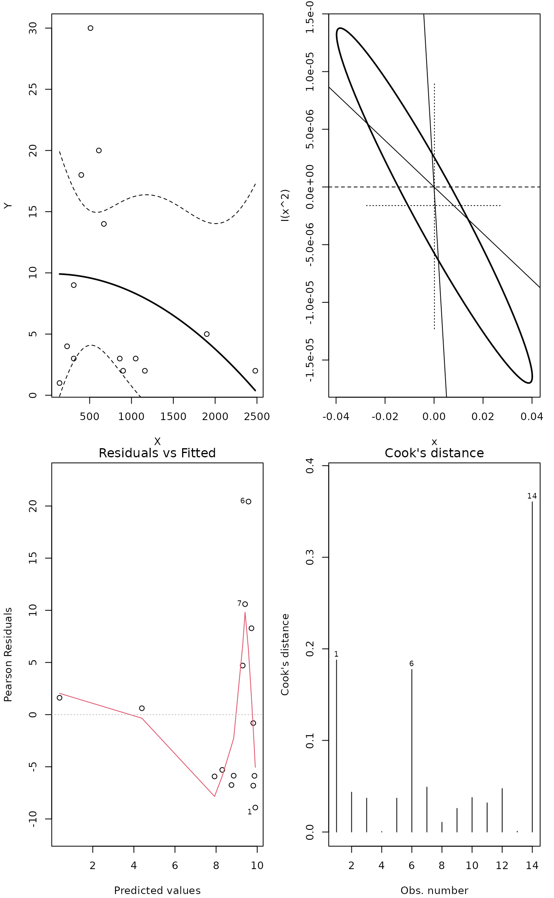
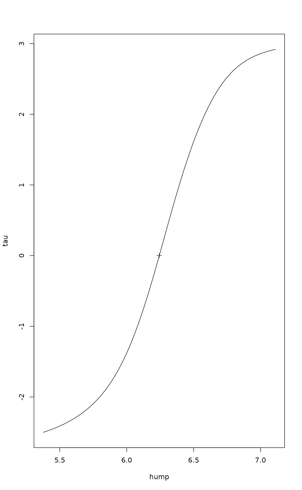
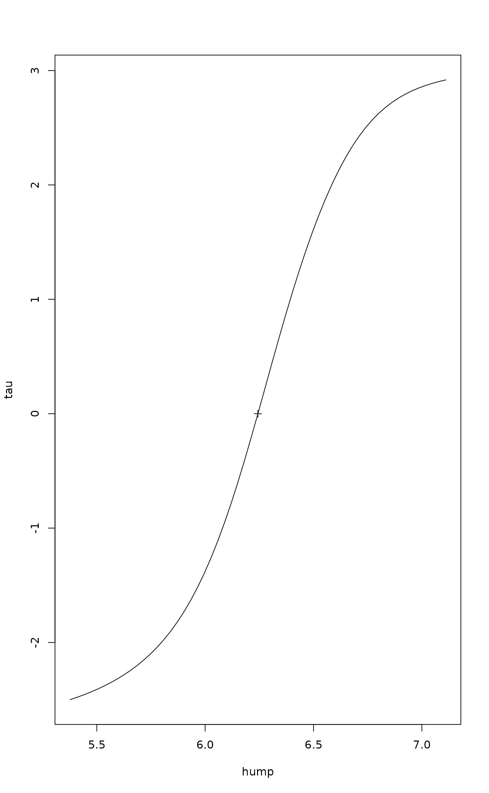

Mitchell-Olds and Shaw Test for the Location of Quadratic Extreme
MOStest.RdMitchell-Olds & Shaw test concerns the location of the highest (hump)
or lowest (pit) value of a quadratic curve at given points. Typically,
it is used to study whether the quadratic hump or pit is located
within a studied interval. The current test is generalized so that it
applies generalized linear models (glm) with link
function instead of simple quadratic curve. The test was popularized
in ecology for the analysis of humped species richness patterns
(Mittelbach et al. 2001), but it is more general. With logarithmic
link function, the quadratic response defines the Gaussian response
model of ecological gradients (ter Braak & Looman 1986), and the test
can be used for inspecting the location of Gaussian optimum within a
given range of the gradient. It can also be used to replace Tokeshi's
test of “bimodal” species frequency distribution.
Usage
MOStest(x, y, interval, ...)
# S3 method for class 'MOStest'
plot(x, which = c(1,2,3,6), ...)
fieller.MOStest(object, level = 0.95)
# S3 method for class 'MOStest'
profile(fitted, alpha = 0.01, maxsteps = 10, del = zmax/5, ...)
# S3 method for class 'MOStest'
confint(object, parm = 1, level = 0.95, ...)Arguments
- x
The independent variable or plotting object in
plot.- y
The dependent variable.
- interval
The two points at which the test statistic is evaluated. If missing, the extremes of
xare used.- which
Subset of plots produced. Values
which=1and2define plots specific toMOStest(see Details), and larger values select graphs ofplot.lm(minus 2).- object, fitted
A result object from
MOStest.- level
The confidence level required.
- alpha
Maximum significance level allowed.
- maxsteps
Maximum number of steps in the profile.
- del
A step length parameter for the profile (see code).
- parm
Ignored.
- ...
Other variables passed to functions. Function
MOStestpasses these toglmso that these can includefamily. The other functions pass these to underlying graphical functions.
Details
The function fits a quadratic curve \(\mu = b_0 + b_1 x + b_2
x^2\) with given family and link function. If \(b_2
< 0\), this defines a unimodal curve with highest point at \(u =
-b_1/(2 b_2)\) (ter Braak & Looman 1986). If \(b_2 > 0\), the
parabola has a minimum at \(u\) and the response is sometimes
called “bimodal”. The null hypothesis is that the extreme
point \(u\) is located within the interval given by points
\(p_1\) and \(p_2\). If the extreme point \(u\) is exactly at
\(p_1\), then \(b_1 = 0\) on shifted axis \(x - p_1\). In the
test, origin of x is shifted to the values \(p_1\) and
\(p_2\), and the test statistic is based on the differences of
deviances between the original model and model where the origin is
forced to the given location using the standard
anova.glm function (Oksanen et al. 2001).
Mitchell-Olds & Shaw (1987) used the first degree coefficient with
its significance as estimated by the summary.glm
function. This give identical results with Normal error, but for
other error distributions it is preferable to use the test based on
differences in deviances in fitted models.
The test is often presented as a general test for the location of the hump, but it really is dependent on the quadratic fitted curve. If the hump is of different form than quadratic, the test may be insignificant.
Because of strong assumptions in the test, you should use the support
functions to inspect the fit. Function plot(..., which=1)
displays the data points, fitted quadratic model, and its approximate
95% confidence intervals (2 times SE). Function plot with
which = 2 displays the approximate confidence interval of
the polynomial coefficients, together with two lines indicating the
combinations of the coefficients that produce the evaluated points of
x. Moreover, the cross-hair shows the approximate confidence
intervals for the polynomial coefficients ignoring their
correlations. Higher values of which produce corresponding
graphs from plot.lm. That is, you must add 2 to the
value of which in plot.lm.
Function fieller.MOStest approximates the confidence limits
of the location of the extreme point (hump or pit) using Fieller's
theorem following ter Braak & Looman (1986). The test is based on
quasideviance except if the family is poisson
or binomial. Function profile evaluates the profile
deviance of the fitted model, and confint finds the profile
based confidence limits following Oksanen et al. (2001).
The test is typically used in assessing the significance of diversity hump against productivity gradient (Mittelbach et al. 2001). It also can be used for the location of the pit (deepest points) instead of the Tokeshi test. Further, it can be used to test the location of the the Gaussian optimum in ecological gradient analysis (ter Braak & Looman 1986, Oksanen et al. 2001).
Value
The function is based on glm, and it returns the result
of object of glm amended with the result of the test. The new
items in the MOStest are:
- isHump
TRUEif the response is a hump.- isBracketed
TRUEif the hump or the pit is bracketed by the evaluated points.- hump
Sorted vector of location of the hump or the pit and the points where the test was evaluated.
- coefficients
Table of test statistics and their significances.
References
Mitchell-Olds, T. & Shaw, R.G. 1987. Regression analysis of natural selection: statistical inference and biological interpretation. Evolution 41, 1149–1161.
Mittelbach, G.C. Steiner, C.F., Scheiner, S.M., Gross, K.L., Reynolds, H.L., Waide, R.B., Willig, R.M., Dodson, S.I. & Gough, L. 2001. What is the observed relationship between species richness and productivity? Ecology 82, 2381–2396.
Oksanen, J., Läärä, E., Tolonen, K. & Warner, B.G. 2001. Confidence intervals for the optimum in the Gaussian response function. Ecology 82, 1191–1197.
ter Braak, C.J.F & Looman, C.W.N 1986. Weighted averaging, logistic regression and the Gaussian response model. Vegetatio 65, 3–11.
Note
Function fieller.MOStest is based on package optgrad in
the Ecological Archives
(https://figshare.com/articles/dataset/Full_Archive/3521975)
accompanying Oksanen et al. (2001). The Ecological Archive package
optgrad also contains profile deviance method for the location
of the hump or pit, but the current implementation of profile
and confint rather follow the example of
profile.glm and confint.glm in
the MASS package.
See also
The no-interaction model can be fitted with humpfit.
Examples
## The Al-Mufti data analysed in humpfit():
mass <- c(140,230,310,310,400,510,610,670,860,900,1050,1160,1900,2480)
spno <- c(1, 4, 3, 9, 18, 30, 20, 14, 3, 2, 3, 2, 5, 2)
mod <- MOStest(mass, spno)
## Insignificant
mod
#>
#> Mitchell-Olds and Shaw test
#> Null: hump of a quadratic linear predictor is at min or max
#>
#> Family: gaussian
#> Link function: identity
#>
#> hump min max
#> 46.89749 140.00000 2480.00000
#> ***** Caution: hump/pit not bracketed by the data ******
#>
#> min/max F Pr(>F)
#> hump at min 140 0.0006 0.9816
#> hump at max 2480 0.3161 0.5852
#> Combined 0.9924
## ... but inadequate shape of the curve
op <- par(mfrow=c(2,2), mar=c(4,4,1,1)+.1)
plot(mod)

## Looks rather like log-link with Poisson error and logarithmic biomass
mod <- MOStest(log(mass), spno, family=quasipoisson)
mod
#>
#> Mitchell-Olds and Shaw test
#> Null: hump of a quadratic linear predictor is at min or max
#>
#> Family: quasipoisson
#> Link function: log
#>
#> min hump max
#> 4.941642 6.243371 7.816014
#>
#> min/max F Pr(>F)
#> hump at min 4.9416 7.1367 0.02174 *
#> hump at max 7.8160 9.0487 0.01191 *
#> Combined 0.03338 *
#> ---
#> Signif. codes: 0 ‘***’ 0.001 ‘**’ 0.01 ‘*’ 0.05 ‘.’ 0.1 ‘ ’ 1
plot(mod)
 par(op)
## Confidence Limits
fieller.MOStest(mod)
#> 2.5 % 97.5 %
#> 5.255827 6.782979
confint(mod)
#> 2.5 % 97.5 %
#> 5.816021 6.574378
plot(profile(mod))

par(op)
## Confidence Limits
fieller.MOStest(mod)
#> 2.5 % 97.5 %
#> 5.255827 6.782979
confint(mod)
#> 2.5 % 97.5 %
#> 5.816021 6.574378
plot(profile(mod))
